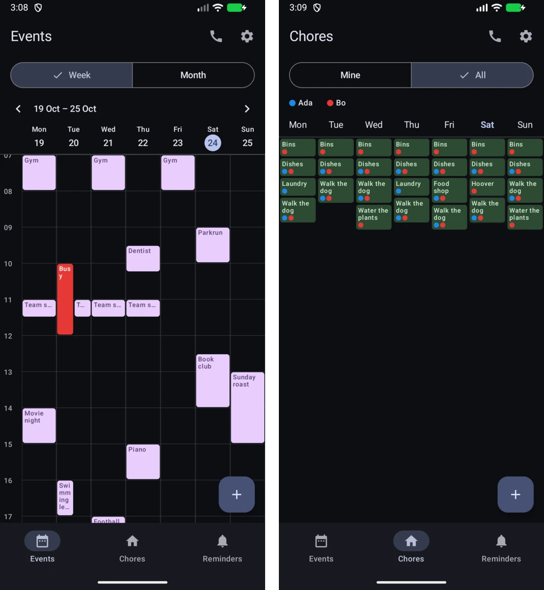

Soulmanyes
GitHub
Soulmanyes
GitHub
Soulmanyes
GitHub
Soulmanyes
GitHub
Pick the one you want to download. The Linux apps install with the command shown: paste it into a terminal.

Download for Android
curl -fsSL https://raw.githubusercontent.com/Soulmanyes/lacquer/master/install.sh | shView on GitHub

curl -fsSL https://raw.githubusercontent.com/Soulmanyes/hypr-dashboard/main/install.sh | shView on GitHub

curl -fsSL https://raw.githubusercontent.com/Soulmanyes/shellac/main/install.sh | shView on GitHub
cl_yawspeed with one key), a strafe
trainer, per-tick strafe review in the browser, a gain converter, and HUD modules for Momentum such as JHUD
and a strafe speed histogram. Install only the tools you want from the hub's Modules page.
Windows and Linux

curl -fsSL https://raw.githubusercontent.com/Soulmanyes/movement-kit/main/movekit/install-hub.sh | shDownload for Windows View on GitHub
 Download for Windows or Linux
Download for Windows or Linux

curl -fsSL https://raw.githubusercontent.com/Soulmanyes/gesture-cam/main/install.sh | shMore about Gesture Cam

curl -fsSL https://raw.githubusercontent.com/Soulmanyes/playtime/main/install.sh | shView on GitHub
 View on GitHub
View on GitHub
 View on GitHub
View on GitHub
curl -fsSL https://raw.githubusercontent.com/Soulmanyes/minecraft-server-panel/main/install.sh | shView on GitHub